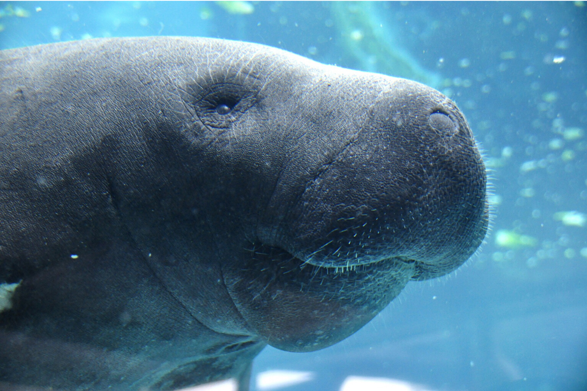

BENVENUTO NEL SITO DEI DUGONGHI
Il dugongo è un animale acquatico di grossa mole e di colore grigio-biancastro che può superare i 3 metri di lunghezza, per un peso compreso tra 400 e 500 kg. La femmina risulta spesso leggermente più lunga e pesante del maschio, ma non abbastanza da poter parlare di dimorfismo sessuale. Dugongo Il dugongo ha una struttura fisica tozza e compatta che gli ha fatto guadagnare il popolare soprannome di "mucca di mare"; in questo sirenio, infatti, una pinna caudale orizzontale divisa in due lobi simile a quella dei cetacei[2] si associa ad un corpo estremamente massiccio provvisto di due ghiandole mammarie toraciche[3] e di due grosse pinne anteriori appiattite, a forma di spatola[4] Queste ultime hanno una doppia funzione: esse servono sia da mezzo di propulsione per la locomozione e servono anche all'animale per girare[3]. Anche la testa ha una forma insolita[5], caratterizzata da minuscoli occhi e orecchie e da un grosso paio di spesse "labbra"[3]: mentre i primi sono però fattori propri di molti mammiferi marini (si pensi alla balena o all'orca), il secondo è posseduto solo da questa specie, ed è dovuto alla sua particolare dieta.